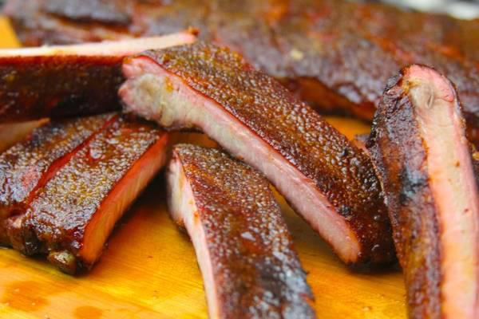

Costillas acarameladas BBQ
Vamos a realizar unas costillas
de cerdo a la barbacoa
un poco de estilo yankee.
Ingredientes
- 1 costillar de cerdo.
- ½ cucharadita de sal kosher por cada kilo de carne.
- 2 cucharadas de mayonesa.
- Rub de Memphis.
- 6 cucharadas de azúcar.
- Una cucharada de agua.
-
Remueve la membrana del costillar.
-
Sazona el costillar con sal kosher dejar
reposar por lo menos 2 hs.
-
Procedemos a encerder el ahumador
colocandole leña y llevar la temperatura
a unos 110º grados celcius.
-
Ahora procedemos a marinar
la carne con la mayonesa.
-
Colocamos el costillar en
en ahumador con la parte del
hueso hacia abajo y lo mas lejos del fuego.
Esta coccion lleva aproximadamente
entre 5 a 6 horas todo dependera
del grosor de la carne.
-
Una vez terminada la coccion
vamos a disolver el azucar
con el agua para realizar una pasta
y se la untaremos al costillar.
-
Ahora con uno soplete de cocina
doramos el azucar para generar una
corteza dura.
Dejamos que se enfrie, cortamos
y servimos.

INICIO